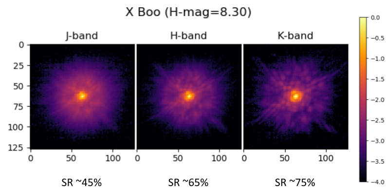

System
Performance
Observing
Near Infrared Wavefront Sensor (NIR WFS)
|
Information for S24A applicantsThe Near-Infrared Wavefront Sensor (NIR WFS) is available for Open-Use observations, in shared-risk mode. The NIR WFS is a PI-type module of AO188 offered starting semester S24A in shared-risk mode. According to Subaru Telescope's rules for PI-type instruments, please contact and include the PI, Julien Lozi (lozi_at_naoj.org), if you plan on submitting a proposal. If your proposal targets the galactic center, please also contact and include co-I Shogo Nishiyama (shogo-n_at_staff.miyakyo-u.ac.jp). Before preparing the proposal, please read Planning Observations very carefully . |
Introduction
The Near Infrared Wavefront Sensor (NIR WFS) is a wavefront sensor located inside the AO188 adaptive optics system of the Subaru Telescope. It uses most of the AO188 optics, and replaces the visible curvature wavefront sensor to control the 188-element bimoprh deformable mirror to perform the wavefront correction. It has three modes: a Pyramid WFS mode (PyWFS), a Focal Plane WFS mode (FPWFS) and a pupil imaging mode (See Technical description for more information about the design). Only the PyWFS mode will be offered for Open-Use observations in S24A.
The open-use instruments that can currently benefit from the NIR WFS are IRCS. SCExAO, SCExAO+CHARIS, SCExAO+VAMPIRES, SCExAO+MEC and SCExAO+REACH, although not all modes are compatible.
The NIR WFS only operates in NGS mode. It requires a bright star within 10 arcsec from the science target. A target brighter than H-mag = 9 to 13 is required to obtain a reasonable correction, depending on the spectrum of the star, and the dichroic beamsplitter pickoff selected (See Planning Observations for more information). We demonstrated excellent performance in above-average seeing of ~0.8", with Strehl ratios up to ~75% in K-band (See Performance for more details).
Modes supported in S24A
SCExAO
The NIR WFS can be used with the following SCExAO modes :- CHARIS low-red broadband
- CHARIS hi-red J, H or K-band
- VAMPIRES imaging
- MEC y and J band
- REACH (Single mode fiber injection inside SCExAO feeding IRD
IRCS
The NIR WFS can be used with the following IRCS modes :- 20 mas imaging mode with Y- , J- , H- , and K-band
- Echelle mode with zJ- , J- , H- , and K-band
|
 |
|
|
|---|
Basic parameters
| Location | Nasmyth focus (IR) |
| Spectral coverage of science path | 0.6-2.4 um |
| Number of control elements | 188 |
| Deformable mirror | Bimorph mirror with 188 control electrodes |
| High-order WFS | NIR Pyramid Wavefront sensor with HgCdTe detector. |
| Control bandwidth | > 100 Hz, 500 to 2000 corrections/sec |
| NGS magnitude | -3 < H < 9-13 (Depending on the selected dichroic) |
| Off-axis steering | 20 arcsec diameter |
| Wavelength range | 0.95-1.8 um (y, J and H-band) |
Technical Description
Performance
Planning Observations
Instrument citation
Please cite the following paper when you refer to the NIR WFS in your publication.
- "AO3000 at Subaru: Combining for the first time a NIR WFS using First Light's C-RED ONE and ALPAO's 64x64 DM"
- Lozi et al. 2022, Proc. SPIE, vol. 12185, id. 1218533
Contacts
Questions regarding this page should be directed to the primary support astronomer (Julien Lozi, lozi_at_naoj.org).
Please note that all numbers on these pages are subject to change as the performance of the NIR WFS is better determined.